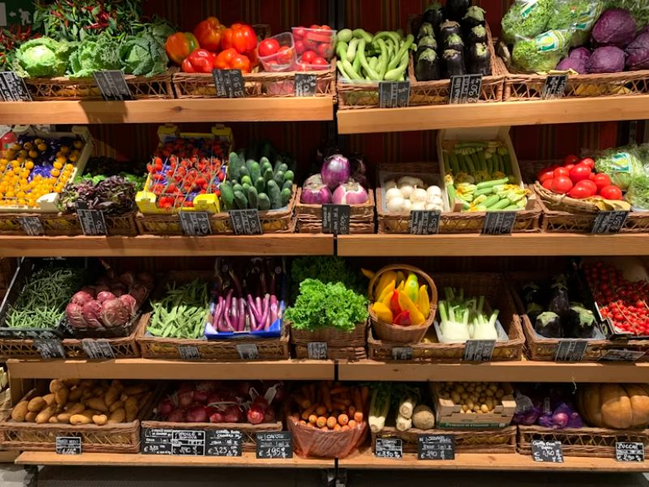
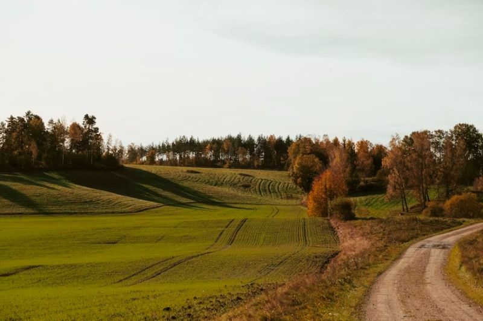
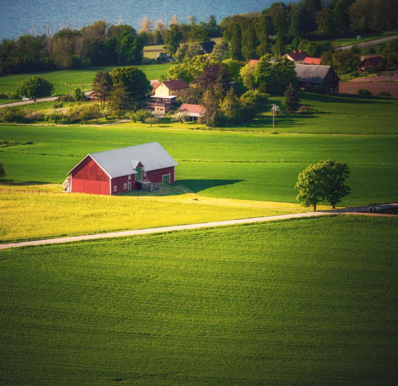

Shop & Cafe
Discover award-winning pies, fresh free-range eggs, home-baked treats and local cheeses.
Explore Shop →

Welcome to our farm shop website, where you can find all the information that you need about our products.
Plan Your VisitWelcome to our farm shop website, where you can find all the information that you need about our products. A small farm located between Edinburgh and Carlisle has been converted into a visitor attraction that includes a shop selling local produce and plants, small petting zoo, cafe, Play Park and walks.
Take a Listen to what awaits you at Abbington Farm Park:

Discover award-winning pies, fresh free-range eggs, home-baked treats and local cheeses.

Visit and enjoy our petting zoo, hayrides, giant corn maze, and park walks..
View Activities →